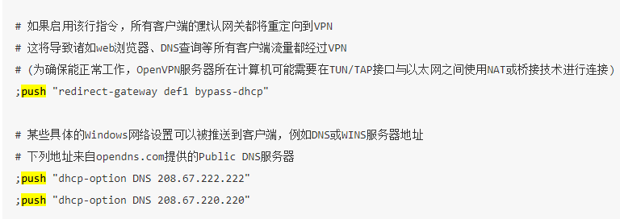

准备工作
更新cent os并启用EPEL存储库
sudo yum update -y
yum install epel-release
安装openvpn
yum install -y openvpn easy-rsa
复制文件
[root@localhost ~]# cp -r /usr/share/easy-rsa/ /etc/openvpn/easy-rsa
[root@localhost ~]# cd /etc/openvpn/easy-rsa/
[root@localhost easy-rsa]# \rm 3 3.0
[root@localhost easy-rsa]# cd 3.0.7/
[root@localhost 3.0.7]# find / -type f -name "vars.example" | xargs -i cp {} . && mv vars.example vars # 查找 "vars.example" 这个文件，把他复制到当前目录，并且重命名为vars
xargs 与 管道 配合使用，将 find 的结果作为参数， 以 {} 表示这个参数。
cp xx .表示复制到当前目录。 && （逻辑与）连接命令，只有在前面的命令执行成功后，后面的命令才能执行
用“；”连接命令，不保证命令全部执行成功，即使前者执行失败，后者仍然执行。
用“||”（逻辑或）连接命令，如果前面的命令执行成功，后面的命令就不能执行了；如果前面的命令执行不成功，才会执行后面的命令，两者（多者）中如果有一条能够正常执行，其他的则不执行。
服务端证书
创建一个新的PKI和CA
[root@localhost 3.0.7]# pwd
/etc/openvpn/easy-rsa/3.0.7
[root@localhost 3.0.7]# ./easyrsa init-pki # 创建空的pki
Note: using Easy-RSA configuration from: /etc/openvpn/easy-rsa/3.0.7/vars
init-pki complete; you may now create a CA or requests.
Your newly created PKI dir is: /etc/openvpn/easy-rsa/3.0.7/pki
[root@localhost 3.0.7]# ./easyrsa build-ca nopass # 创建新的CA，不使用密码
Note: using Easy-RSA configuration from: /etc/openvpn/easy-rsa/3.0.7/vars
Using SSL: openssl OpenSSL 1.0.2k-fips 26 Jan 2017
Generating RSA private key, 2048 bit long modulus
......................................................................+++
................................................................................+++
e is 65537 (0x10001)
You are about to be asked to enter information that will be incorporated
into your certificate request.
What you are about to enter is what is called a Distinguished Name or a DN.
There are quite a few fields but you can leave some blank
For some fields there will be a default value,
If you enter '.', the field will be left blank.
-----
Common Name (eg: your user, host, or server name) [Easy-RSA CA]: # 这里直接回车
CA creation complete and you may now import and sign cert requests.
Your new CA certificate file for publishing is at:
/etc/openvpn/easy-rsa/3.0.7/pki/ca.crt
创建服务端证书
[root@localhost 3.0.7]# ./easyrsa gen-req server nopass
Note: using Easy-RSA configuration from: /etc/openvpn/easy-rsa/3.0.7/vars
Using SSL: openssl OpenSSL 1.0.2k-fips 26 Jan 2017
Generating a 2048 bit RSA private key
.......................................................................................................................+++
................................+++
writing new private key to '/etc/openvpn/easy-rsa/3.0.7/pki/easy-rsa-17863.v2n44e/tmp.Q5twYb'
-----
You are about to be asked to enter information that will be incorporated
into your certificate request.
What you are about to enter is what is called a Distinguished Name or a DN.
There are quite a few fields but you can leave some blank
For some fields there will be a default value,
If you enter '.', the field will be left blank.
-----
Common Name (eg: your user, host, or server name) [server]: # 这里直接回车
Keypair and certificate request completed. Your files are:
req: /etc/openvpn/easy-rsa/3.0.7/pki/reqs/server.req
key: /etc/openvpn/easy-rsa/3.0.7/pki/private/server.key
签约服务端证书
[root@localhost 3.0.7]# ./easyrsa sign server server
Note: using Easy-RSA configuration from: /etc/openvpn/easy-rsa/3.0.7/vars
Using SSL: openssl OpenSSL 1.0.2k-fips 26 Jan 2017
You are about to sign the following certificate.
Please check over the details shown below for accuracy. Note that this request
has not been cryptographically verified. Please be sure it came from a trusted
source or that you have verified the request checksum with the sender.
Request subject, to be signed as a server certificate for 825 days:
subject=
commonName = server
Type the word 'yes' to continue, or any other input to abort.
Confirm request details: yes # 这里输入yes
Using configuration from /etc/openvpn/easy-rsa/3.0.7/pki/easy-rsa-18428.6zfZuc/tmp.lr3YlN
Check that the request matches the signature
Signature ok
The Subject's Distinguished Name is as follows
commonName :ASN.1 12:'server'
Certificate is to be certified until Aug 31 07:29:15 2022 GMT (825 days)
Write out database with 1 new entries
Data Base Updated
Certificate created at: /etc/openvpn/easy-rsa/3.0.7/pki/issued/server.crt
创建Diffie-Hellman
[root@localhost 3.0.7]# ./easyrsa gen-dh
Note: using Easy-RSA configuration from: /etc/openvpn/easy-rsa/3.0.7/vars
Using SSL: openssl OpenSSL 1.0.2k-fips 26 Jan 2017
Generating DH parameters, 2048 bit long safe prime, generator 2
This is going to take a long time
............................................................
DH parameters of size 2048 created at /etc/openvpn/easy-rsa/3.0.7/pki/dh.pem
创建客户端证书
复制文件
[root@localhost ~]# cp -r /usr/share/easy-rsa/ /etc/openvpn/client/easy-rsa
[root@localhost ~]# cd /etc/openvpn/client/easy-rsa/
[root@localhost easy-rsa]# \rm 3 3.0
[root@localhost easy-rsa]# cd 3.0.7/
[root@localhost 3.0.7]# find / -type f -name "vars.example" | xargs -i cp {} . && mv vars.example vars
生成证书
[root@localhost 3.0.7]# pwd
/etc/openvpn/client/easy-rsa/3.0.7
[root@localhost 3.0.7]# ./easyrsa init-pki #创建新的pki
Note: using Easy-RSA configuration from: /etc/openvpn/client/easy-rsa/3.0.7/vars
init-pki complete; you may now create a CA or requests.
Your newly created PKI dir is: /etc/openvpn/client/easy-rsa/3.0.7/pki
[root@localhost 3.0.7]# ./easyrsa gen-req test nopass #客户证书名为test，木有密码
Note: using Easy-RSA configuration from: /etc/openvpn/client/easy-rsa/3.0.7/vars
Using SSL: openssl OpenSSL 1.0.2k-fips 26 Jan 2017
Generating a 2048 bit RSA private key
....................................................+++
............+++
writing new private key to '/etc/openvpn/client/easy-rsa/3.0.7/pki/easy-rsa-28830.1Uj5EB/tmp.PRmM3e'
-----
You are about to be asked to enter information that will be incorporated
into your certificate request.
What you are about to enter is what is called a Distinguished Name or a DN.
There are quite a few fields but you can leave some blank
For some fields there will be a default value,
If you enter '.', the field will be left blank.
-----
Common Name (eg: your user, host, or server name) [test]: # 这里直接回车
Keypair and certificate request completed. Your files are:
req: /etc/openvpn/client/easy-rsa/3.0.7/pki/reqs/test.req
key: /etc/openvpn/client/easy-rsa/3.0.7/pki/private/test.key
最后签约客户端证书
[root@localhost 3.0.7]# cd /etc/openvpn/easy-rsa/3.0.7/
[root@localhost 3.0.7]# pwd
/etc/openvpn/easy-rsa/3.0.7
[root@localhost 3.0.7]# ./easyrsa import-req /etc/openvpn/client/easy-rsa/3.0.7/pki/reqs/test.req test
Note: using Easy-RSA configuration from: /etc/openvpn/easy-rsa/3.0.7/vars
Using SSL: openssl OpenSSL 1.0.2k-fips 26 Jan 2017
The request has been successfully imported with a short name of: test
You may now use this name to perform signing operations on this request.
[root@localhost 3.0.7]# ./easyrsa sign client test
Note: using Easy-RSA configuration from: /etc/openvpn/easy-rsa/3.0.7/vars
Using SSL: openssl OpenSSL 1.0.2k-fips 26 Jan 2017
You are about to sign the following certificate.
Please check over the details shown below for accuracy. Note that this request
has not been cryptographically verified. Please be sure it came from a trusted
source or that you have verified the request checksum with the sender.
Request subject, to be signed as a client certificate for 825 days:
subject=
commonName = test
Type the word 'yes' to continue, or any other input to abort.
Confirm request details: yes # 这里输入yes
Using configuration from /etc/openvpn/easy-rsa/3.0.7/pki/easy-rsa-31692.OSZF1J/tmp.ogDbJ2
Check that the request matches the signature
Signature ok
The Subject's Distinguished Name is as follows
commonName :ASN.1 12:'test'
Certificate is to be certified until Aug 31 07:38:51 2022 GMT (825 days)
Write out database with 1 new entries
Data Base Updated
Certificate created at: /etc/openvpn/easy-rsa/3.0.7/pki/issued/test.crt
整理证书
现在所有的证书都已经生成完了，下面来整理一下。
服务端所需要的文件
[root@localhost ~]# mkdir /etc/openvpn/certs
[root@localhost ~]# cd /etc/openvpn/certs/
[root@localhost certs]# cp /etc/openvpn/easy-rsa/3.0.7/pki/dh.pem .
[root@localhost certs]# cp /etc/openvpn/easy-rsa/3.0.7/pki/ca.crt .
[root@localhost certs]# cp /etc/openvpn/easy-rsa/3.0.7/pki/issued/server.crt .
[root@localhost certs]# cp /etc/openvpn/easy-rsa/3.0.7/pki/private/server.key .
[root@localhost certs]# ll
total 20
-rw------- 1 root root 1172 May 28 15:56 ca.crt
-rw------- 1 root root 424 May 28 15:56 dh.pem
-rw------- 1 root root 4547 May 28 15:57 server.crt
-rw------- 1 root root 1704 May 28 15:57 server.key
客户端所需的文件
[root@localhost certs]# mkdir /etc/openvpn/client/test/
[root@localhost certs]# cp /etc/openvpn/easy-rsa/3.0.7/pki/ca.crt /etc/openvpn/client/test/
[root@localhost certs]# cp /etc/openvpn/easy-rsa/3.0.7/pki/issued/test.crt /etc/openvpn/client/test/
[root@localhost certs]# cp /etc/openvpn/client/easy-rsa/3.0.7/pki/private/test.key /etc/openvpn/client/test/
[root@localhost certs]# ll /etc/openvpn/client/test/
total 16
-rw------- 1 root root 1172 May 28 15:58 ca.crt
-rw------- 1 root root 4426 May 28 15:59 test.crt
-rw------- 1 root root 1704 May 28 15:59 test.key
其实这三个文件就够了，之前全下载下来是因为方便，然而这次懒得弄了，哈哈，编写服务端配置文件。顺便提一下再添加用户在./easyrsa gen-req这里开始就行了,像是吊销用户证书的命令都自己用./easyrsa --help去看吧，GitHub项目地址
服务器配置文件
[root@localhost ~]# vim /etc/openvpn/server.conf
local 192.168.0.240 #服务器IP
port 1194 #占用端口
proto udp #使用udp协议
dev tun #使用tun模式，也可以使用tap 。 "dev tun"将会创建一个路由IP隧道， "dev tap"将会创建一个以太网隧道
ca /etc/openvpn/certs/ca.crt
cert /etc/openvpn/certs/server.crt
key /etc/openvpn/certs/server.key
dh /etc/openvpn/certs/dh.pem #指定证书位置
ifconfig-pool-persist /etc/openvpn/ipp.txt #存放每个人使用的IP
server 10.8.0.0 255.255.255.0 #客户端DHCP。 帮助程序指令，旨在简化OpenVPN服务器模式的配置。该指令将设置一个OpenVPN服务器，该服务器将为给定网络/网络掩码之外的客户端分配地址。服务器本身将使用给定网络的“ .1”地址作为本地TUN / TAP接口的服务器端端点。
push "route 192.168.0.0 255.255.255.0"
push "redirect-gateway def1 bypass-dhcp" #所有流量都走VPN，如果不需要将下三行去掉
push "dhcp-option DNS 223.5.5.5" #DNS1
push "dhcp-option DNS 223.6.6.6" #DNS2
client-to-client #允许客户端之间互通
keepalive 20 120 #保持连接时间
comp-lzo #开启vpn压缩
#duplicate-cn #允许多人使用同一个证书连接VPN，不建议使用，注释状态
user openvpn #运行用户
group openvpn #运行组
persist-key
persist-tun
status openvpn-status.log
log-append openvpn.log
verb 1 #日志级别0-9，等级越高，记录越多
mute 20



启动服务
[root@localhost ~]# systemctl start openvpn@server
[root@localhost ~]# systemctl enable openvpn@server # 开机启动